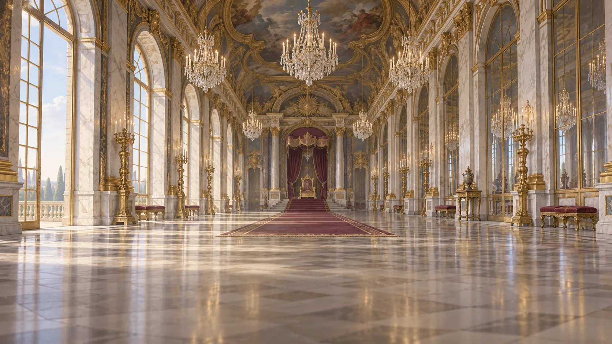

1702 · FRANCE × ENGLAND
태양왕이
여왕이 되었다
프랑스에서 통했던 왕의 논리는
영국 의회에서도 통할 수 있을까?
GAME / EVENT + AUDIO + EMOTION FIX · v0.47

FRANCE베르사유 궁전
논리탄환을 고르세요
END · AFTER THE CROWN
강한 국가는
강한 왕 한 사람으로 만들어지는가?
강한 국가는 강한 왕 한 사람으로 만들어지는가?
루이는 왜 “애송이 앤”이라는 말을 취소했을까?
프랑스와 영국은 왜 같은 재정·군사 국가이면서 다른 정치 구조를 만들었을까?